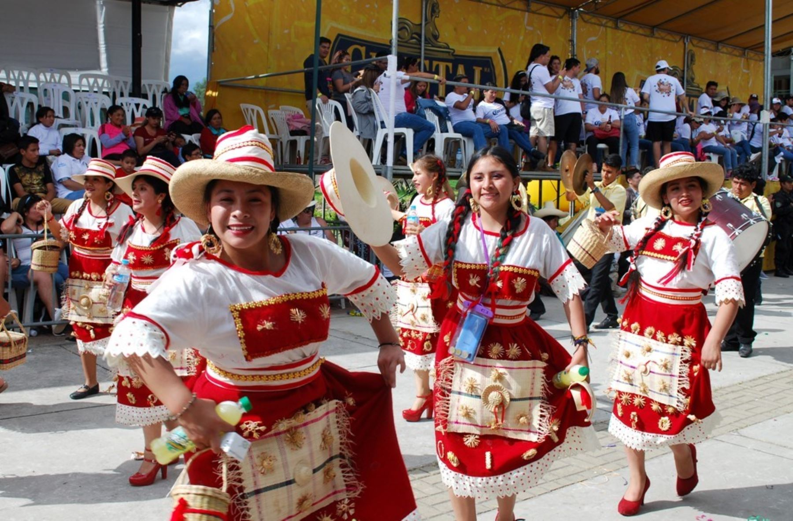
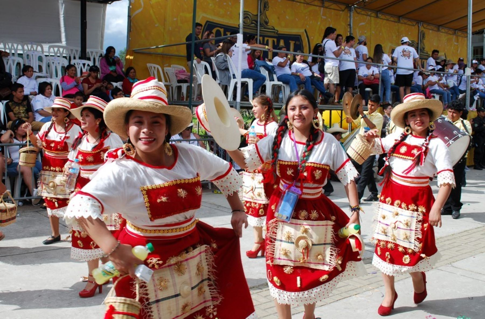

Home
Welcome to the Cajamarca Carnival website. Here you can find all the information about the event.
Our website aims to inform and guide you about this vibrant celebration, known as the "Happiest Festival in Peru." Here, you will find detailed information about the history and origins of the carnival,the event schedule, visitor information, and much more. We also offer a rich gallery of photos and videos to give you a glimpse of the colorful and joyous atmosphere of the carnival.
Key purposes of our website include:
- Providing Detailed Information: Learn about the history, traditions, and cultural significance of the Cajamarca Carnival.
- Event Schedule and Updates: Stay informed about the schedule of events, parades, and activities taking place during the carnival.
- Visitor Guidance: Get practical tips and advice on how to plan your visit, including travel information, accommodation options, and safety tips.
- Photo Gallery: Explore a collection of vibrant images that capture the essence of the carnival.
- Contact and Engagement: Reach out to us with your questions, comments, or for more information about the carnival.
Whether you are a local resident or a visitor, the Cajamarca Carnival offers a unique and immersive experience that showcases the cultural richness and joyful spirit of Cajamarca. Plan your visit and be part of this extraordinary celebration!
History and Origins
The Cajamarca Carnival, known as the "Happiest Festival in Peru," has its roots in pre-Hispanic and European traditions. It has been celebrated since colonial times and has evolved into a massive cultural event. The festival includes a mix of Andean rituals and Spanish customs, reflecting the region's rich cultural heritage. During the carnival, the city is filled with music, dances, parades, and contests, with King Momo and Ño Carnavalón being the most emblematic characters.
Event Schedule
Cajamarca Carnival 2024 Schedule
The Cajamarca Carnival returns in 2024 with grand celebrations that last over a month, including the main days: entrance, patrols and troupes, parade, wake, and burial. In 2024, the main days of the Cajamarca Carnival will be in February. Take note and plan your trip in advance.
-
February 9: Carnival Welcome
This is a new activity debuting in 2024. There will surely be many surprises, dancing, color, and joy.
-
February 10: Entrance of Ño Carnavalón
It begins on Saturday, February 10 at 10 a.m. Starting point: Av. Independencia block 10. The festivity overflows throughout the city. On this day, the children of King Momo gather to receive him, dressed in colorful paints covering their faces and bodies, accompanied by the essential instruments to sing carnival songs, and of course, carrying the rich chicha to refresh their throats, recharge energy, and ward off the cold.
-
February 11: Patrols and Troupes Contest
It will be held on Sunday, February 11 from 10 a.m. Troupes and patrols from the neighborhoods move through the main streets of the city, competing in different categories. A lot of elegance, color, and tradition in this unparalleled procession. In many parts of the city, the event can be enjoyed for free.
-
February 12: Grand Carnival Parade
It starts on Monday, February 12 at 10:00 a.m. at the Qhapaq Ñan complex. Attractive floats, queens, patrols, troupes, and delegations make a journey of more than 3.5 km before the eyes of thousands of spectators. To enjoy this event, make sure to arrive early at the parade route to secure a seat.
-
February 13: Wake of Ño Carnavalón
It will take place on Tuesday, February 13 at 8:00 p.m. in Bolognesi Square. After the king of joy dies, his widows gather to mourn him. In a very humorous event, the widows of Ño Carnavalón compete with jokes and "pain" performances. A unique event open to the public, completely free.
-
February 14: Burial of Ño Carnavalón
Finally, on Wednesday, February 14 at 10:00 a.m., the remains of Ño Carnavalón will be cremated. The procession begins at Jr. Santa Rosa (Cajamarca) and ends in the district of Los Baños del Inca. Before the cremation, the testament of Ño Carnavalón is read, which leaves inheritance to national and local authorities, carnival goers, UTC, firefighters, and other local personalities. Unmissable from start to finish.
Photo Gallery and Videos
Explore our gallery to see vibrant photos and videos capturing the essence of the Cajamarca Carnival. Here you can see colorful costumes, exciting troupes, and the contagious joy of the participants.
 


Visitor Information
Plan your visit to the Cajamarca Carnival with the following useful information:
- Dates: The carnival is celebrated in February, but the exact dates vary each year.
- How to Get There: Cajamarca has an airport with regular flights from Lima. You can also reach it by bus from various cities.
- Accommodation: It is recommended to book in advance. There are a variety of accommodation options, from hotels to hostels and temporary rentals.
- Travel Tips: Bring comfortable and water-resistant clothing, as the festivities include water and paint games. Also, be cautious with your belongings in large crowds.